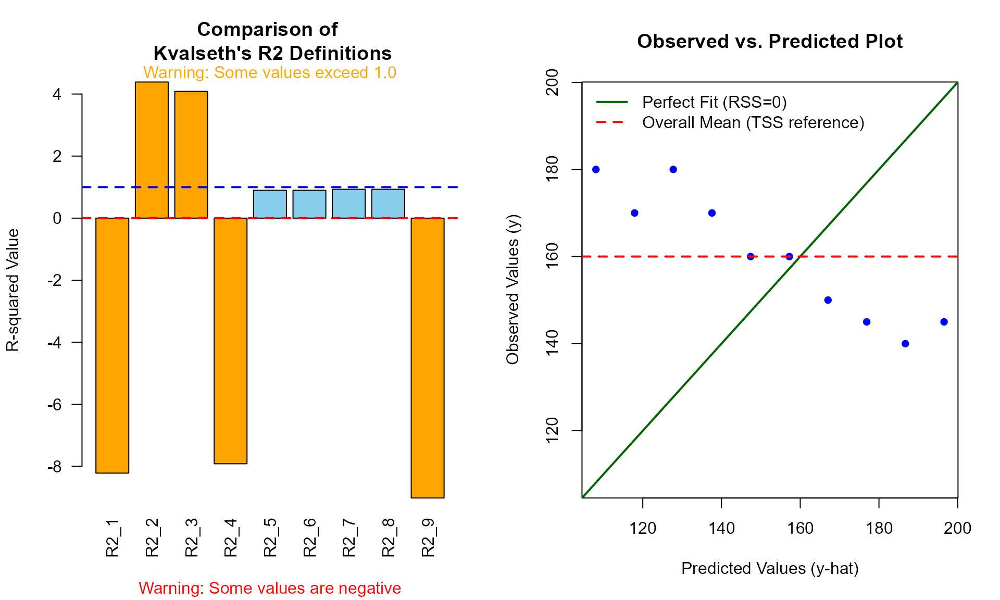

The Pitfalls of R-squared: Understanding Mathematical Sensitivity
Source:vignettes/Pitfalls_of_R2.Rmd
Pitfalls_of_R2.RmdIntroduction: Why \(R^2\) is Not Unique
In many statistical software packages, the coefficient of determination (\(R^2\)) is presented as a singular, definitive value. However, as Tarald O. Kvalseth pointed out in his seminal 1985 paper, “Cautionary Note about \(R^2\)”, there are multiple ways to define and calculate this metric.
While these definitions converge in standard linear regression with
an intercept, they can diverge dramatically in other contexts, such as
models without an intercept or power regression models. The
kvr2 package is designed as an educational tool to explore
this mathematical sensitivity.
The Eight + One Definitions
Kvalseth (1985) classified eight existing formulas and proposed one robust alternative. Here are the core definitions used in this package:
Standard Definitions
- \(R^2_1\): The most common form, measuring the proportion of variance explained. Kvalseth strongly recommends this for consistency.
\[R_1^2 = 1 - \frac{\sum(y - \hat{y})^2}{\sum(y - \bar{y})^2}\]
- \(R^2_2\): Often used in some contexts, but can exceed 1.0 in no-intercept models.
\[R_2^2 = \frac{\sum(\hat{y} - \bar{y})^2}{\sum(y - \bar{y})^2}\]
- \(R^2_6\): The square of Pearson’s correlation coefficient between observed and predicted values.
\[R_6^2 = \frac{\left( \sum(y - \bar{y})(\hat{y} - \bar{\hat{y}}) \right)^2}{\sum(y - \bar{y})^2 \sum(\hat{y} - \bar{\hat{y}})^2}\]
When \(R^2\) Goes Negative: Interpretation and Risks
One of the most confusing moments for a researcher is encountering a negative . Mathematically, is often expected to be between 0 and 1. However, in several formulas—most notably —the value can become negative.
Meaning of Negative Values
A negative indicates that the chosen model predicts the data worse than a horizontal line representing the mean of the observed data.
In , this occurs when the Residual Sum of Squares (RSS) exceeds the Total Sum of Squares (TSS). This is a clear signal that:
- The model is fundamentally inappropriate for the data.
- You are forcing a model through a specific constraint (like a zero-intercept) that the data strongly resists.
Case Study: Forcing a No-Intercept Model
Consider a dataset with a strong negative trend where we force the model through the origin.
library(kvr2)
# Example: Data with a trend that doesn't pass through (0,0)
df_neg <- data.frame(
x = c(110, 120, 130, 140, 150, 160, 170, 180, 190, 200),
y = c(180, 170, 180, 170, 160, 160, 150, 145, 140, 145)
)
model_forced <- lm(y ~ x - 1, data = df_neg)
r2(model_forced)
#> R2_1 : -8.2183
#> R2_2 : 4.3883
#> R2_3 : 4.0856
#> R2_4 : -7.9156
#> R2_5 : 0.8976
#> R2_6 : 0.8976
#> R2_7 : 0.9303
#> R2_8 : 0.9303
#> R2_9 : -9.0197
#> ---------------------------------
#> (Type: linear, without intercept, n: 10, k: 1)In this case, is approximately -15.2. This massive negative value tells us that using the mean of as a predictor would be far more accurate than this zero-intercept model. Interestingly, \(R^2_6\) and \(R^2_8\) remain positive because they measure correlation or re-fit the intercept, potentially masking how poor the original forced model actually is.
The Transformation Trap (Power Models)
In power regression models (typically fitted via log-log transformation), the definition of the “mean” and “residuals” becomes ambiguous. Does the \(R^2\) refer to the transformed space or the original space?
When type = "auto" (the default), kvr2
detects whether the model is a power regression by analyzing the model
formula. It specifically looks for the log() function call
on the dependent variable.
# Power model via log-transformation
df1 <- data.frame(x = 1:6, y = c(15, 37, 52, 59, 83, 92))
model_power <- lm(log(y) ~ log(x), data = df1)
r2(model_power)
#> R2_1 : 0.9777
#> R2_2 : 1.0984
#> R2_3 : 1.0983
#> R2_4 : 0.9778
#> R2_5 : 0.9816
#> R2_6 : 0.9811
#> R2_7 : 0.9961
#> R2_8 : 1.0232
#> R2_9 : 0.9706
#> ---------------------------------
#> (Type: power, with intercept, n: 6, k: 2)Distinguishing Variable Names from Functions
Unlike simpler string-matching approaches, kvr2
distinguishes between a variable actually named “log” and the
logarithmic function. This prevents misclassification when you have a
linear model where a variable is named “log”.
# A linear model where the dependent variable is named 'log'
df_log_name <- data.frame(x = 1:6, log = c(15, 37, 52, 59, 83, 92))
model_linear_log <- lm(log ~ x, data = df_log_name)
# kvr2 correctly identifies this as "linear", not "power"
model_info(r2(model_linear_log))$type
#> [1] "linear"Transparency and Metadata: Beyond the Numbers
When comparing nine different definitions of \(R^2\), it is crucial to know the exact
parameters used in the calculation. The kvr2 package
ensures transparency by storing and displaying the model metadata.
Inspecting Model Information
The model_info() function allows you to retrieve the
underlying specifications of the calculation:
model_no_int <- lm(y ~ x - 1, df1)
res <- r2(model_no_int)
model_info(res)
#> $type
#> [1] "linear"
#>
#> $has_intercept
#> [1] FALSE
#>
#> $n
#> [1] 6
#>
#> $k
#> [1] 1
#>
#> $df_res
#> [1] 5This returns:
- type: Whether the calculation treated the model as linear or power.
- has_intercept: Verification of the intercept’s presence.
- n: The actual sample size used (excluding any missing values).
- k: The number of parameters (important for adjusted \(R^2\)).
- df_res: Residual degrees of freedom (\(n - k\)).
Enhanced Console Output
By default, the print method for r2_kvr2 and
comp_kvr2 objects now displays this information at the
bottom. This feature serves as a built-in “sanity check” to ensure you
are comparing like with like. If you only need the numerical results,
you can disable this using print(results,
model_info = FALSE).
Technical Note: How R Calculates
It is important to understand how the standard R function
summary.lm() computes its reported . Internally, R uses the
ratio of sums of squares:
Where is the Model Sum of Squares and is the Residual Sum of Squares.
The Shift in Baseline
- With Intercept: is calculated relative to the mean. In this case, , and the formula is equivalent to .
- Without Intercept: R changes the definition of to the sum of squares about the origin.
Because R shifts the baseline for no-intercept models, the reported
by summary(lm(y ~ x - 1)) can appear high even if the model
is poor. The kvr2 package helps expose this by showing
(relative to the mean) alongside R’s default behavior, allowing you to
see if your model is truly better than a simple average.
Case Study: The Danger of No-Intercept Models
Let’s use the example data from Kvalseth (1985) to see how these values diverge when we remove the intercept.
df1 <- data.frame(x = 1:6, y = c(15, 37, 52, 59, 83, 92))
# Model without an intercept
model_no_int <- lm(y ~ x - 1, data = df1)
# Calculate all 9 types
results <- r2(model_no_int)
results
#> R2_1 : 0.9777
#> R2_2 : 1.0836
#> R2_3 : 1.0830
#> R2_4 : 0.9783
#> R2_5 : 0.9808
#> R2_6 : 0.9808
#> R2_7 : 0.9961
#> R2_8 : 0.9961
#> R2_9 : 0.9717
#> ---------------------------------
#> (Type: linear, without intercept, n: 6, k: 1)The Trap
Notice that \(R^2_2\) and \(R^2_3\) are greater than 1.0. This happens because, without an intercept, the standard sum of squares relationship (\(SS_{tot} = SS_{reg} + SS_{res}\)) no longer holds. If a researcher blindly reports \(R^2_2\), the result is mathematically nonsensical.
Kvalseth argues that \(R^2_1\) is generally preferable because it remains bounded by 1.0 and maintains a clear interpretation of “error reduction.”
Visualizing the Sensitivity of R-squared
To better understand the divergence between these definitions, the
kvr2 package provides a specialized plotting function. When
you apply plot_kvr2() to your model, it displays both the
comparison of \(R^2\) definitions and a
diagnostic observed-vs-predicted plot.
# Example with the forced no-intercept model
plot_kvr2(model_forced)
The diagnostic plot (right panel) provides an immediate visual explanation for anomalous \(R^2\) values.
As you can see, when the data points are clustered closer to the red dashed line (mean) than the green solid line (model prediction), it mathematically forces \(R^2_1\) to become negative. This is because \(R^2_1\) is defined as:
\[R_1^2 = 1 - \frac{RSS}{TSS}\]
Where: - RSS (Residual Sum of Squares) is the distance to the green line. - TSS (Total Sum of Squares) is the distance to the red line.
When the green line is a poorer fit than the red line, \(RSS > TSS\), resulting in \(R^2_1 < 0\).
Similarly, in no-intercept models, some definitions like \(R^2_2\) can exceed 1.0 because the standard decomposition \(SS_{tot} = SS_{reg} + SS_{res}\) no longer applies. The plot reveals this instability by showing how the model’s trajectory (green line) deviates from the actual trend of the data points.
Comparing Intercept vs. No-Intercept Models
One of the most critical insights from Kvalseth (1985) is that certain \(R^2\) definitions become unreliable—or even mathematically invalid—when a model is forced through the origin (no-intercept model).To facilitate this comparison, the kvr2 package provides the comp_model() function. This tool automatically fits both the intercept and no-intercept versions of your model and aligns their metrics side-by-side.
Practical Example: The Sensitivity of \(R^2\)
Consider a scenario where we force a linear model through the origin. We can use the df1 dataset from Kvalseth’s original paper:
model_int <- lm(y ~ x, data = df1)
# Compare the two model specifications
comparison <- comp_model(model_int)1. The Inflation of \(R^2_2\)
Notice that in the without intercept row, R2_2 exceeds 1.0 (e.g., 1.0836). This occurs because \(R^2_2\) is defined as \(\sum \hat{y}^2 / \sum (y - \bar{y})^2\) in some contexts, and without an intercept, the standard sum-of-squares decomposition breaks down. This serves as a visual warning that \(R^2_2\) is an inappropriate measure for no-intercept models.
2. The Drop in Predictive Accuracy
While some \(R^2\) values might appear higher in the no-intercept model, the RMSE (Root Mean Squared Error) typically increases. This indicates that the “forced” model actually has poorer predictive performance, even if certain \(R^2\) definitions suggest otherwise.
Adjusted R-squared Comparison
You can also compare degree-of-freedom adjusted values by setting
adjusted = TRUE. This is particularly useful when comparing
models with different numbers of predictors, though in the intercept
vs. no-intercept case, it primarily highlights the penalty for removing
the intercept term.
# Compare adjusted R-squared values
comp_model(model_int, adjusted = TRUE)
#> model | R2_1_adj | R2_2_adj | R2_3_adj | R2_4_adj | R2_5_adj
#> ------------------------------------------------------------------------
#> with intercept | 0.9760 | 0.9760 | 0.9760 | 0.9760 | 0.9760
#> without intercept | 0.9732 | 1.1003 | 1.0996 | 0.9739 | 0.9770
#>
#> model | R2_6_adj | R2_7_adj | R2_8_adj | R2_9_adj | RMSE | MAE | MSE
#> -----------------------------------------------------------------------------------------
#> with intercept | 0.9760 | 0.9958 | 0.9958 | 0.9722 | 3.6165 | 3.5238 | 19.6190
#> without intercept | 0.9770 | 0.9953 | 0.9953 | 0.9661 | 3.9008 | 3.6520 | 18.2593
#> ---------------------------------
#>
#> Note: Some R2 values exceed 1.0 or are negative, indicating that these definitions may be inappropriate for the no-intercept model.Conclusion: A Multi-Metric Approach
As demonstrated, a single value can be misleading. When is negative or exceeds, it is a diagnostic signal. We recommend:
- Compare \(R^2_1\) and \(R^2_{reported}\): If they differ wildly, your intercept constraint is likely problematic.
- Check Absolute Errors: Always look at RMSE or MAE alongside \(R^2\) to understand the actual scale of the prediction error.
-
Verify the Calculation Context: Use
model_info()to ensure that the sample size (\(n\)) and model type (linear vs. power) match your expectations across different model comparisons. - Context Matters: Use \(R^2_7\) for legitimate origin-constrained physical models, but be wary of its tendency to inflate the perception of fit.
References
Kvalseth, T. O. (1985) Cautionary Note about \(R^2\). The American Statistician, 39(4), 279-285. DOI: 10.1080/00031305.1985.10479448
Yutaka Iguchi. (2025) Differences in the Coefficient of Determination \(R^2\): Using Excel, OpenOffice, LibreOffice, and the statistical analysis software R. Authorea. December 23, DOI: 10.22541/au.176650719.94164489/v1